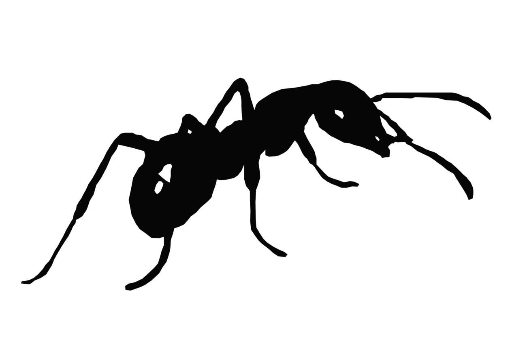

בר קיימא
אדם/קבוצה

עמותת בר קיימא שעוסקת בתמיכה בתרבות הירושלמית התחילה בדיוואן, כדרך לפתוח אותו מבלי לקבל רישיון עסק. העמותה נפתחה ב־2006 כשהמטרה הראשונית הייתה הרבה יותר מצומצמת, והתמקדה בהפיכת הדיוואן לגלריה וחלל להופעות, כדי לתמוך באמנות, בעיקר מוזיקה ואמני וידיאו. עד 2012 התרכזו בלימוד ניהול עמותה, ומאותה שנה פתחו את הדלת ליוזמות בשטח שלא הצליחו לפעול בלי התערבות אמנותית או ניכוס כאשר ניסו להשיג תמיכה.
הפעילות הייתה במתכונת דומה לתקלוט בדיוואן; כל מי שרוצה יכול לנסות דברים בין אם הם יצליחו או לא אבל האפשרות להתנסות תהיה פתוחה. הארגון נבנה על ידי זיהוי צרכים בשטח, כשבכל פעם שקבוצה או יוזמה פונות בבקשת עזרה העמותה תעזור, בין אם מדובר במכירת כרטיסים, ניהול תלמידים ועוד. מאז נעזרו בהם כ־100 יוזמות, מתוכן 50 פעילות כרגע, וחלקן מוכרות כמוסדות במשרד התרבות.
בין הקבוצות והמקומות שבהם תמכו נמצאים המזקקה, גלריה ברבור, גלריית המפעל, תזמורת הרחוב הירושלמית, מגזין אף, הרכבים ולהקות, קבוצות תאטרון, פודקאסטים, איגודים, מגזין ערב רב, המוסך – מוסף לספרות, ולייבלים כגון רעש רקורדס. העמותה מתנהלת על פי אותן מטרות שנקבעו בדיוואן ב־2004 (המקום פעל כעמותה בין 2004-2005, כנסיון ראשון להקים את בר קיימא), ועפ"י לידיה זה הכיוון הנכון בכך שע"י נתינת פלטפורמה חופשית מתאפשרים יצירה וביטוי עצמי ועצמאי.
כיום מלבד ניהול שוטף של העמותה נועם ולידיה מקימים מערכת אונליין לניהול כספים ופרוייקטים, הוצאת קבלות ודברים שאנשים פחות אוהבים בניהול, גם מתוך צורך שלהם עצמם ביעילות.